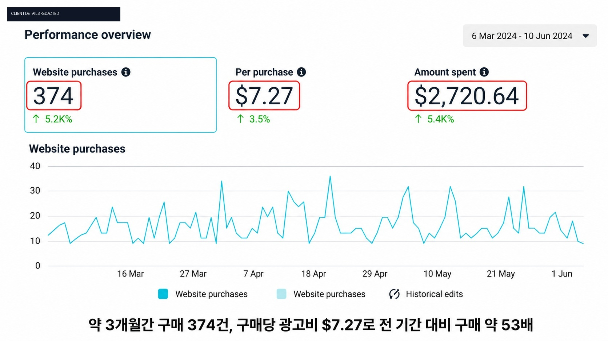
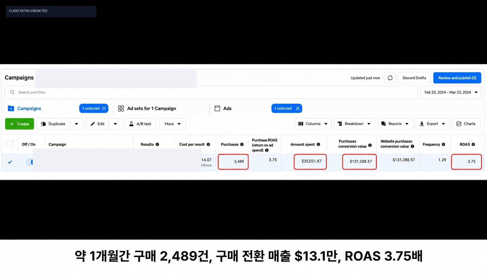
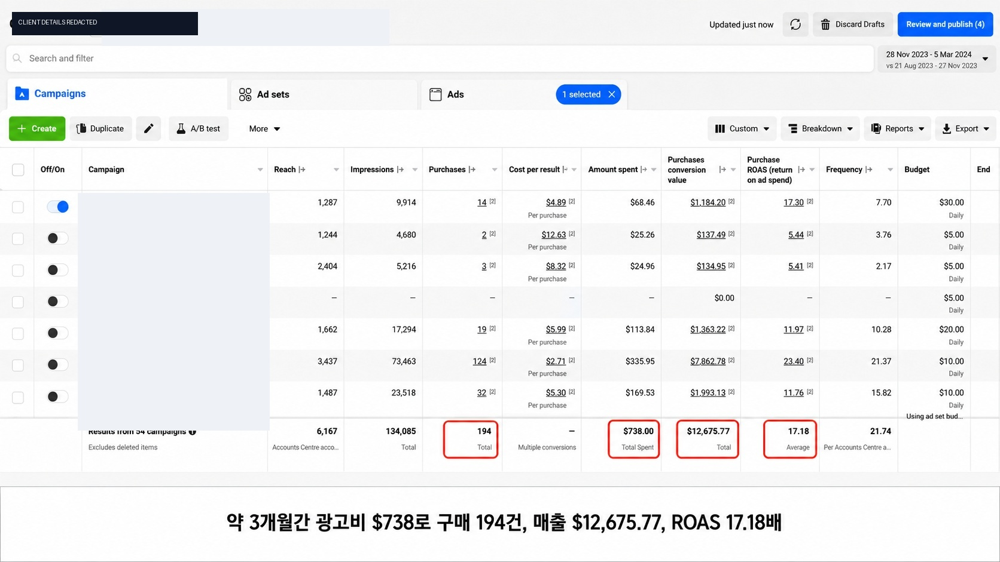
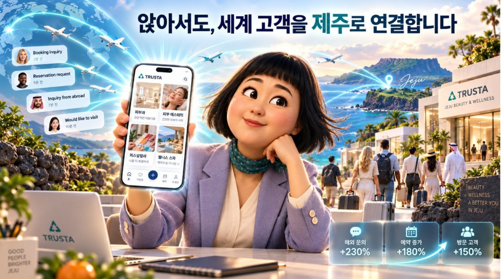
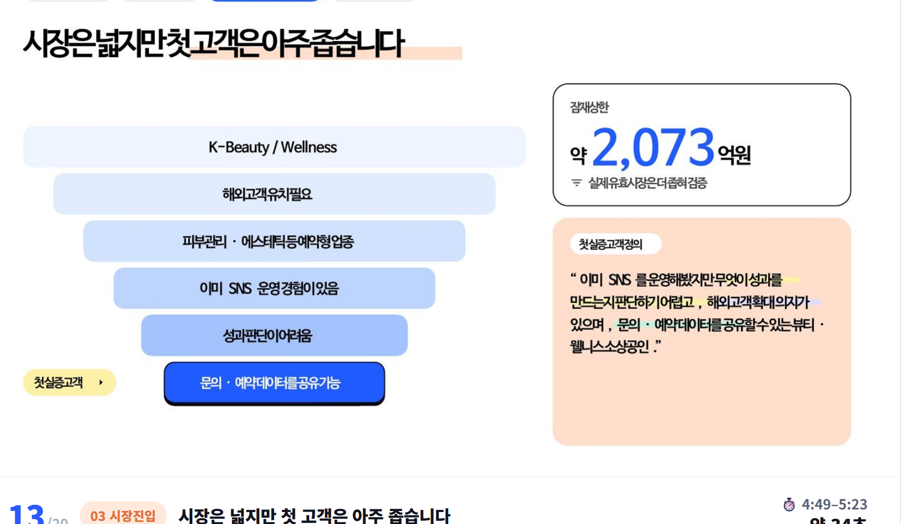
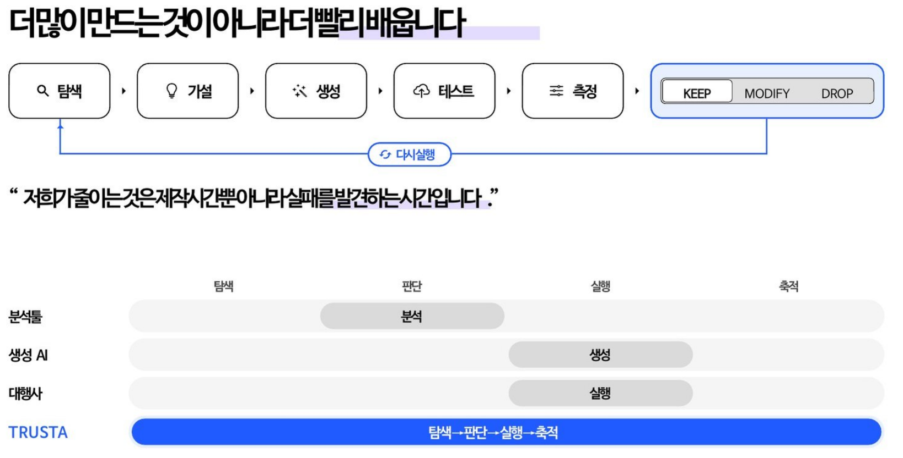

3D·애니메이션 홈페이지
서비스 설명, 포트폴리오, 전환 CTA가 이어지는 브랜드 홈페이지를 구성합니다.
랜딩 / 서비스 쇼룸 / 전환 구조Data-based Growth Partner
소상공인의 브랜드가 발견되고, 이해되고, 문의로 이어지는 흐름을 콘텐츠·웹·전략·자동화로 연결합니다.
선착순 무료 베타 신청0원 · 구매 의무 없음 · 자동결제 없음 · 위약금 없음 · 최소 이용기간 의무 없음
TRUSTA는 이미지와 영상을 따로 만들고 끝내지 않습니다. 고객이 어떤 국가에서 어떤 고민을 하는지부터 보고, 채널별 콘텐츠와 문의 동선, 제휴사 서비스까지 이어지는 구조를 설계합니다.
필요한 서비스만 개별로 시작할 수 있고, 성장 단계에 맞춰 서로 연결할 수 있습니다.
서비스 설명, 포트폴리오, 전환 CTA가 이어지는 브랜드 홈페이지를 구성합니다.
랜딩 / 서비스 쇼룸 / 전환 구조브랜드 캐릭터와 UGC형 장면을 릴스·인스타툰·쇼츠에서 반복 활용합니다.
UGC / 숏폼 / 캐릭터 시스템인스타, Threads, X, 블로그, 유튜브의 주제·문구·일정을 하나의 흐름으로 관리합니다.
기획 / 제작 / 검토 / 다음 달 가설브랜드 진단부터 타깃, 포지셔닝, 콘텐츠, 해외고객 전략까지 우선순위를 잡습니다.
진단 / 타깃 / 포지셔닝 / 전략정부지원, IR, 제안서, 회사소개서를 전략 구조·디자인·데이터 시각화로 만듭니다.
IR / 제안서 / 회사소개서 / 사업계획서정보 구조와 가독성을 강화하고, 반복되는 리드·콘텐츠·보고 업무를 자동화합니다.
블로그 / 디자인 / 업무 자동화고객과 계정·캠페인 식별 정보는 가린 제공 자료입니다. 업종·예산·시기·채널에 따라 결과는 달라집니다.



과거 사례는 미래의 조회수·매출·예약을 보장하지 않습니다.
브랜드, 고객, 국가, 채널, 현재 자료를 확인합니다.
타깃·포지셔닝·콘텐츠·문의 동선을 정합니다.
영상·SNS·웹·문서 중 필요한 것만 만듭니다.
제휴사·예약·상담·추천 구조와 연결합니다.
제공된 반응·문의 데이터를 다음 기획에 반영합니다.
아래 화면은 실제 고객 성과가 아닌 TRUSTA의 운영 방식과 제품 방향을 설명하는 개념 시각화입니다.



Referral은 추천·소개·제휴 구조입니다. 다단계, 수익 보장, 소개 수당 보장으로 표현하지 않습니다.